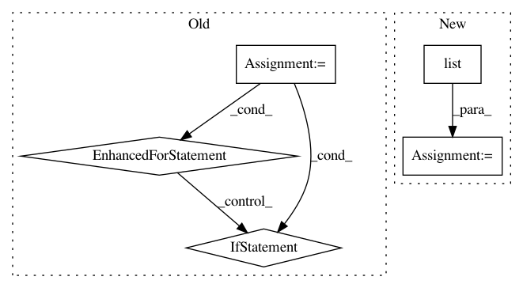

10d7ece1c34c5533262a54d20d974a3d04f0b7ce,src/sdk/pynni/nni/compression/tensorflow/compressor.py,,_instrument_model,#Any#Any#,289
Before Change
def _instrument_model(model, wrappers):
// Replace layers to wrappers
for wrapper in reversed(wrappers):
cur = model
for key in wrapper.layer_info.path[:-1]:
if isinstance(key, str):
cur = getattr(cur, key)
else:
name, index = key
cur = getattr(cur, name)[index]
key = wrapper.layer_info.path[-1]
if isinstance(key, str):
setattr(cur, key, wrapper)
else:
name, index = key
getattr(cur, name)[index] = wrapper
//if isinstance(cur, tf.keras.Sequential):
// cur._graph_initialized = False
// cur._layer_call_argspecs[wrapper] = cur._layer_call_argspecs[wrapper.layer]
After Change
return tf.keras.Sequential(layers) if need_rebuild else seq
def _instrument_model(self, model):
for key, value in list(model.__dict__.items()): // avoid "dictionary keys changed during iteration"
if isinstance(value, tf.keras.layers.Layer):
new_layer = self._instrument(value)
if new_layer is not value:
setattr(model, key, new_layer)
elif isinstance(value, list):
for i, item in enumerate(value):
if isinstance(item, tf.keras.layers.Layer):
value[i] = self._instrument(item)
return model
def _select_config(self, layer):
In pattern: SUPERPATTERN
Frequency: 3
Non-data size: 5
Instances
Project Name: microsoft/nni
Commit Name: 10d7ece1c34c5533262a54d20d974a3d04f0b7ce
Time: 2020-09-15
Author: 40699903+liuzhe-lz@users.noreply.github.com
File Name: src/sdk/pynni/nni/compression/tensorflow/compressor.py
Class Name:
Method Name: _instrument_model
Project Name: AKSHAYUBHAT/DeepVideoAnalytics
Commit Name: bd4146b3f0281bbcd45bfefac7c666168e29ed73
Time: 2018-05-31
Author: akshayubhat@gmail.com
File Name: server/dvaapp/operations/dataset.py
Class Name: DatasetCreator
Method Name: extract_zip_dataset
Project Name: tflearn/tflearn
Commit Name: b52030a1fc8ce7b0a63be3c0882a1a36cbdd0311
Time: 2017-07-12
Author: exelents.s@gmail.com
File Name: tflearn/helpers/trainer.py
Class Name: Trainer
Method Name: fit